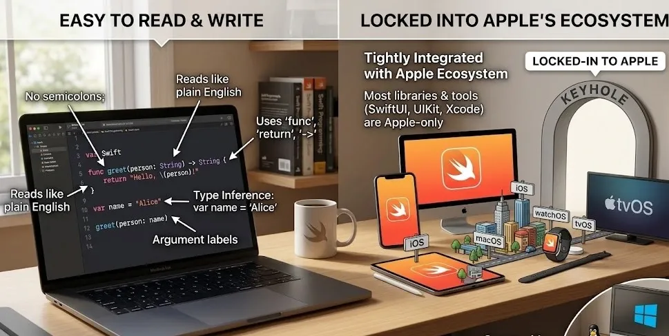

Incoming Programming Languages: -
Outline:
- Mojo
-
Introduction
-
Python Is Easy To Write
-
Speed Problem in Python
-
Code Example of Python
-
High Speed in C++
-
C++ Is Difficult To Write
-
Code Example of C++
-
How Mojo Solves The Problems
-
Syntax Example Of Mojo
-
Advantages Of Mojo
-
Conclusion
- Hylo
-
Introduction
-
High Speed in C++
-
C++ Is Difficult To Write
-
Code Example of C++
-
Rust Provides Extreme Safety
-
Rust has a brutal learning curve
-
Code Example of Rust
-
Swift is easy to read and write
-
Swift is mostly locked into Apple's ecosystem
-
Code Example of Swift
-
How Hylo Solves The Problems
-
Syntax Example Of Hylo
-
Advantages Of Hylo
-
Conclusion
Mojo Programming Language:
Introduction to Mojo:
It is an upcoming programming language made by the company Modular. Mojo was created by Chris Lattner (creator of Swift and LLVM) and his team at Modular Inc. . The language is designed to combine Python's ease of use with C++-level performance, specifically targeting AI and high-performance computing workloads. The name "Mojo" is often accompanied by the fire emoji (🔥), and the language files can even use it as a file extension.
May 2, 2023—Modular announced Mojo and launched the Mojo Playground, a browser-based environment where developers could try Mojo through Jupyter notebooks.
September 2023 – Mojo became available locally on Linux systems.
October 2023—macOS support was added (including Apple Silicon).
March 2024—Mojo's standard library was open-sourced on GitHub under the Apache 2 license.
It is being considered the future and the most powerful programming language, as it is written the same as Python, and its execution speed is as fast as C++. This means its syntax is totally the same as Python's, but in terms of speed, it is C++. The company itself says that,
“Write like Python, Run Like C++”
Python Is Easy To Write:
Python is one of the easiest programming languages to write and understand, especially for beginners. The syntax is clean and readable, and the indentation rules are simple, making it more approachable than other programming languages.
Speed Problem in Python:-
The major problem with Python is its slow speed of execution. Python code is run by an interpreter, which reads and executes each line of code one at a time during runtime. Python is a lot slower than compiled languages because of the extra step of interpretation. This is especially true for CPU-heavy tasks.
Code Example of Python:
def add(x, y):
return x + yHigh Speed in C++:
C++ is among the fastest programming languages because it is a compiled language with manual memory management and zero-cost abstractions. C++ offers an excellent balance of speed and features. Its performance and hardware control make it the go-to choice for game engines, operating systems, browser engines (like Chrome's V8), and real-time applications.
C++ Is Difficult To Write:
C++ is often considered more difficult to learn and write than Python because of its complex syntax and requirement to understand lower-level concepts. For example, even a simple "add two numbers" function requires the following:
- Including headers (#include <iostream>)
- Defining types for each parameter (int add(int x, int y))
- Writing a main() function to test it
This boilerplate code makes C++ less beginner-friendly and can slow down rapid development compared to Python's minimal syntax.
Code Example of C++:
#include <iostream>
using namespace std;
int add(int x, int y) {
return x + y;
}And that's the point where people choose Python to write the code and manage big projects of development and such, but when it comes to speed, people need to struggle with C++.
How Mojo Solves the Problem: -
The Mojo solves both of these problems by providing the speed of C++ and the clear, easy syntax of Python. It’s like two superpowers got together and made the most invincible programming language.
Syntax Example Of Mojo:-
def main():
print("Hello, World!")Advantages Of Mojo:-
Modern Programming Language:
Mojo unites the best of modern languages, including the usability of Python, the memory safety of Rust, and the powerful and intuitive compile-time metaprogramming of Zig. That means that Mojo is not just a hybrid of Python and C++, but a language that is carefully designed, taking the best from many modern programming languages.
Designed For AI:
Mojo is built for maximum performance across the full range of hardware used to run modern AI systems, from GPUs and TPUs to special accelerators. As a compiled, statically typed language, it is also great for agentic programming where reliability and performance at scale matter.
Pure Power:
No more compromises between power and productivity—Mojo is both. You can start with simple, familiar programming patterns, adding complexity when you need it. That is the future of coding.
Open source:
The Mojo standard library is fully open source on GitHub, and we welcome contributions! We also plan to open-source the Mojo compiler in 2026.
GPU programming:
Mojo makes GPU programming accessible to everyone, removing the need for vendor-specific libraries and separate compilation. Finally, you are able to write high-performance GPU kernels in the same language as for CPUs.
Python interop:
Mojo has native interop with Python, so you can cut out performance bottlenecks in existing code without rewriting everything. Start with one function, scale up as necessary, and use Mojo for performance-critical code. Your Mojo code is naturally importable into Python and packages together for distribution. You can also import libraries from the Python ecosystem into your Mojo code.
Conclusion:-
Python is easy but slow. C++ is fast but difficult. Mojo is one or the other. No more concessions. No more compromises. Simply, the wild performance with the soul of Python. Mojo is not the future of programming. That’s it now. And it’s on fire. 🔥
Hylo Programming Language:
Introduction to Hylo:
It is an experimental programming language made by a team of open-source developers. Hylo was created by Dave Abrahams (co-designer of Swift's core architecture) and Dmitri Gribenko, along with other language researchers. The language is designed to combine the safety and speed of Rust and C++ with a much simpler, easier-to-write coding model.
The name "Hylo" comes from the Greek word hyle, meaning "matter" or "substance," which reflects its focus on "values" rather than computer memory addresses.
2021–2022—The language started under the name Val as a research project to improve systems programming.
March 2023—The project was officially renamed to Hylo to avoid naming conflicts with other software.

Present — Hylo's compiler and standard library are completely open-sourced on GitHub, built mostly using the Swift language and the LLVM compiler toolchain.
It is being considered a major breakthrough in how we write fast software. It lets you write code that is as fast as C++ and as safe as Rust, but without the confusing rules (like Rust's borrow checker) that make those languages hard to learn. It achieves this by focusing completely on "values" instead of references.
The core idea behind Hylo is the following:
"Safe, fast, and simple systems programming."
Extreme safety in Rust:
Rust is designed with extreme safety in mind, enforced at compile time by the borrow checker. Each value has one owner. When the owner goes out of scope, the memory is automatically freed (no leaks, no double frees). The borrow checker also prevents use-after-free, dangling pointers, and data races (by allowing either a single mutable reference or many immutable references, never both). Buffer overflow can be caught at compile time by bounds checking. All this without a garbage collector. Giving C++-level performance with mandatory memory safety for Rust . If your Rust code compiles, it’s memory safe.
Rust has a brutal learning curve:
Rust's brutal learning curve comes from its borrow checker, which enforces strict ownership and lifetime rules at compile time. Simple tasks in other languages—like reusing a variable or building a linked list—become complex battles with the compiler. While Python lets you run broken code and C++ lets you shoot yourself in the foot, Rust forces discipline upfront. The result is safety, but the journey is steep and humbling.
Code Example of Rust: -
fn add(x: i32, y: i32) -> i32 {
x + y
}
Swift is easy to read and write. -
Because its syntax is clean and expressive and reads like plain English. Swift removes the extra symbols you get in languages like C++ or Rust: no semicolons, no manual memory management, and no complex pointer syntax. Functions use natural keywords like "func," "return," and "->," and type inference allows you to write
"var name = 'Alice'" instead of "String name = 'Alice.'"
Swift also uses argument labels that make function calls self-documenting.
Swift is mostly locked into Apple's ecosystem:
Swift is tightly integrated with Apple’s ecosystem: iOS, macOS, watchOS, and tvOS. Apple open-sourced it for Linux and Windows, but most libraries (SwiftUI, UIKit, Core Data) and tools (Xcode) are Apple-only. There’s server-side Swift and cross-platform Swift, but with small communities. If you're writing Swift, you're locked in to Apple.
Code Example of Swift: -
func add(x: Int, y: Int) -> Int { x + y }How Hylo Solves These Problems:
Hylo solves these problems by combining memory safety with simplicity, without a borrow checker or garbage collector.
Unlike C++, Hylo eliminates memory unsafety entirely by enforcing mutable value semantics—data is copied or moved by default, never shared, which prevents use-after-free, buffer overflows, and data races at compile time without requiring manual memory management.
Unlike Rust, Hylo removes the brutal learning curve by ditching the borrow checker altogether; instead, it uses compile-time lifetime elision that automatically infers when memory can be freed, so developers write natural, Swift-like code while still getting Rust-level safety.
Unlike Swift, Hylo is not locked into any ecosystem—it's designed for cross-platform systems programming—and it avoids ARC's runtime overhead by using deterministic, compile-time memory management. The result is a language that is as safe as Rust, as simple as Swift, as fast as C++, and as free as open source—without the compromises of any of them.
Syntax Example of Hylo:
fun add(x: Int, y: Int) -> Int { x + y }Advantages of Hylo
Memory Safety
- No use-after-free bugs
- No buffer overflows
- No data races
- No dangling pointers
- All memory safety guaranteed at compile time
No Borrow Checker
- No lifetime annotations ('a, 'static)
- No fighting the compiler over ownership rules
- Gentler learning curve than Rust
- Write naturally, like Python or Swift
No Garbage Collector
- No runtime pause or slowdown
- No ARC (Automatic Reference Counting) overhead
- No retain cycles to debug
- Deterministic, predictable performance
No Manual Memory Management
- No malloc/free
- No new/delete
- No raw pointers to manage
- No smart pointer complexity (shared_ptr, unique_ptr)
Cross-Platform
- Not locked into any ecosystem (unlike Swift with Apple)
- Works on Linux, Windows, macOS
- Suitable for systems programming everywhere
Mutable Value Semantics
- Data is copied or moved by default
- No unexpected shared state
- No accidental data races
- Easier to reason about code
Performance
- C++-level speed
- Compile-time memory management
- No runtime overhead
Simplicity
- Clean, readable syntax
- Type inference (write var x = 5, not Int x = 5)
- No semicolons required
- Swift-like ease with systems-level power
Conclusion:
Hylo is not just another programming language—it's a paradigm shift. For decades, developers have been forced to choose between safety (Rust and Swift), simplicity (Python and JavaScript), and performance (C++ and C). Hylo is the first language to deliver all three without compromise.
It eliminates C++'s memory vulnerabilities without forcing you to fight a borrow checker like Rust. It offers Swift-like readability without being locked into Apple's ecosystem or suffering ARC overhead. And it delivers Swift-like simplicity without sacrificing systems-level performance.
By combining mutable value semantics, compile-time memory management, and zero runtime overhead, Hylo solves the core tensions that have plagued systems programming for decades. The result is a language that is
- Safer than C++
- Simpler than Rust
- More portable than Swift